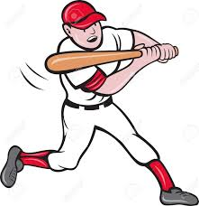

 El béisbol, también llamado baseball o pelota base,2 es un deporte de equipo jugado entre dos equipos de nueve jugadores cada uno. Es considerado uno de los deportes más populares en México, Corea del Sur, Cuba, Estados Unidos, Curazao, Japón, Nicaragua, Panamá, Puerto Rico, República Dominicana y Venezuela, y no tan popular pero con una cantidad importante de aficionados en países como Canadá, Australia, Sudáfrica, Colombia, China, Taiwán, Países Bajos e Italia. Los países considerados potencias de este deporte se encuentran ubicados en América (Norte y el Caribe) y en Asia Oriental, siendo los continentes europeo y africano los más rezagados. Sin embargo, Europa cuenta con dos buenos exponentes (Países Bajos e Italia) y África destaca con la selección de Sudáfrica.